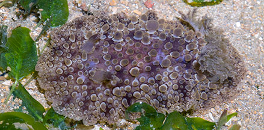
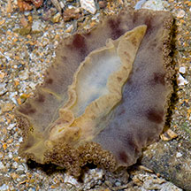
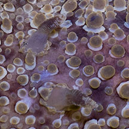
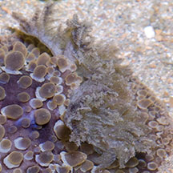
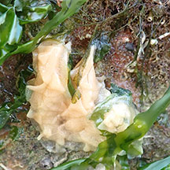

|
|
| nudibranchs text index | photo index |
| Phylum Mollusca > Class Gastropoda > sea slugs > Order Nudibranchia |
| Beaded
nudibranch Hoplodoris nodulosa Family Discodorididae updated May 2020 Where seen? This nudibranch covered in bead-like bumps is sometimes seen on on our Northern shores among seagrasses and seaweeds. It appears to be seasonally common, often many seen during a single visit, then not seen again for some time. Features: 4-5cm long. Hard broad body covered with rounded bumps of different sizes. With a broad band down the centre of the body which has fewer or no bumps and is usually darker in colour. Colour usually pale beige, brown, pinkish. Sometimes with a few darker smudged bars perpendicular to the body margin. The body doesn't fall apart when handled. Gills feathery and orange. The underside is pale with some smudged darkish blotches on the margins. The narrow foot is plain. |
 Pulau Sekudu, Aug 05 |
 Underside. Pulau Sekudu, Jul 06 |
 Rhinophores. |
 Feathery gills. |
 Egg ribbon laid by the nudibranch. Pasir Ris, Mar 20 |
An upside down nudibranch turning itself right side up, with a glimpse of egg ribbon nearby, probably laid by it. |
| Beaded nudibranchs on Singapore shores |
On wildsingapore
flickr
|
| Other sightings on Singapore shores |
Links
|